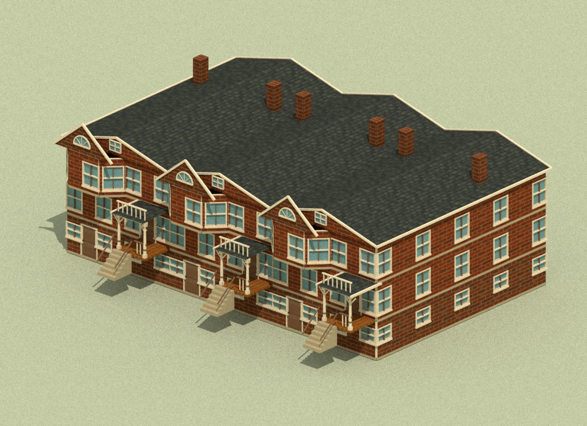
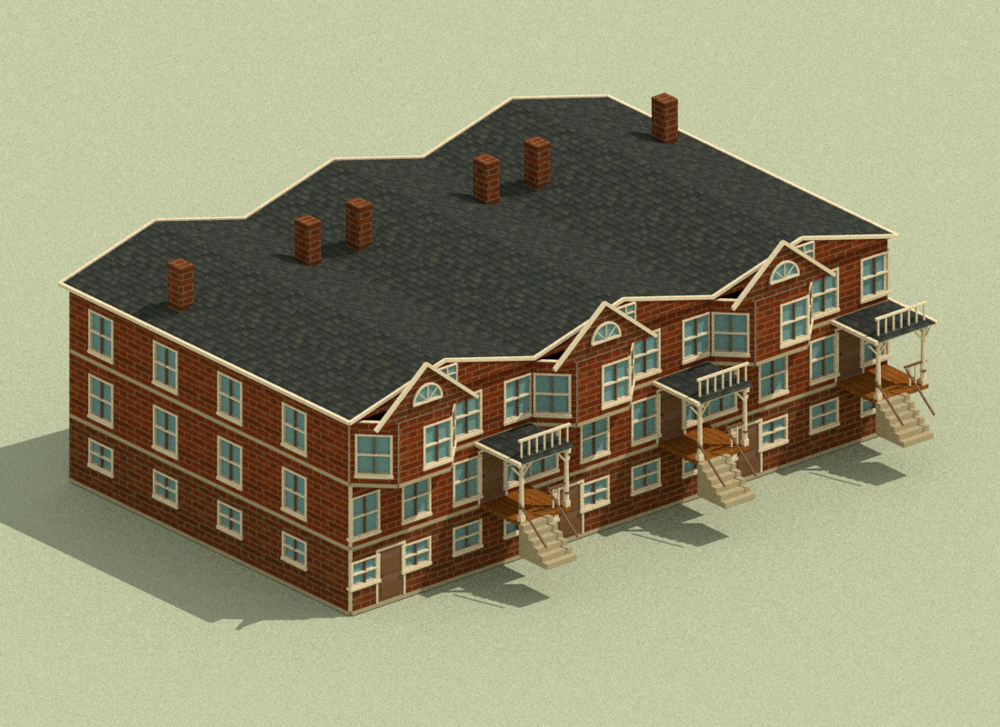
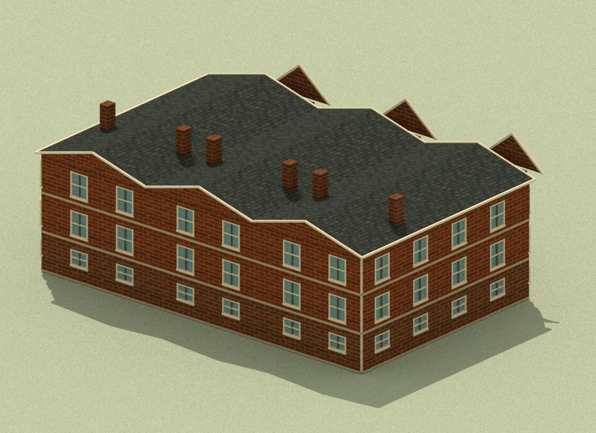
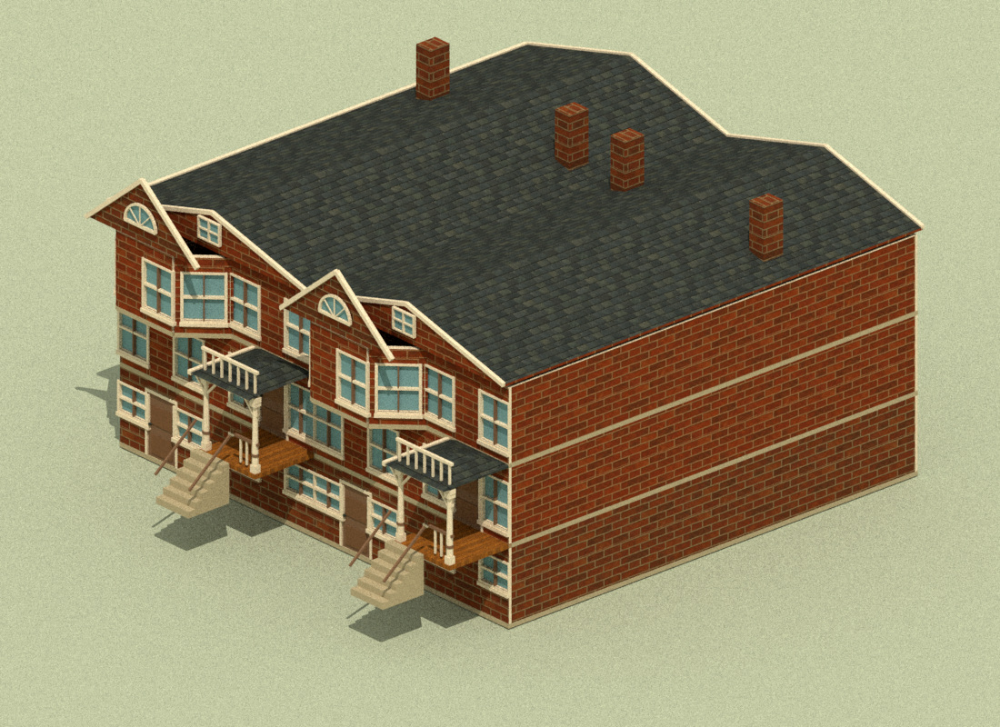
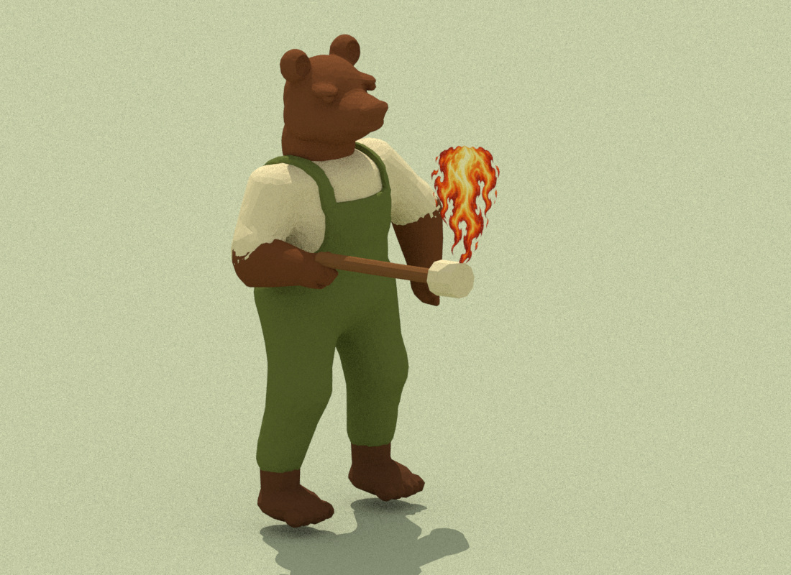
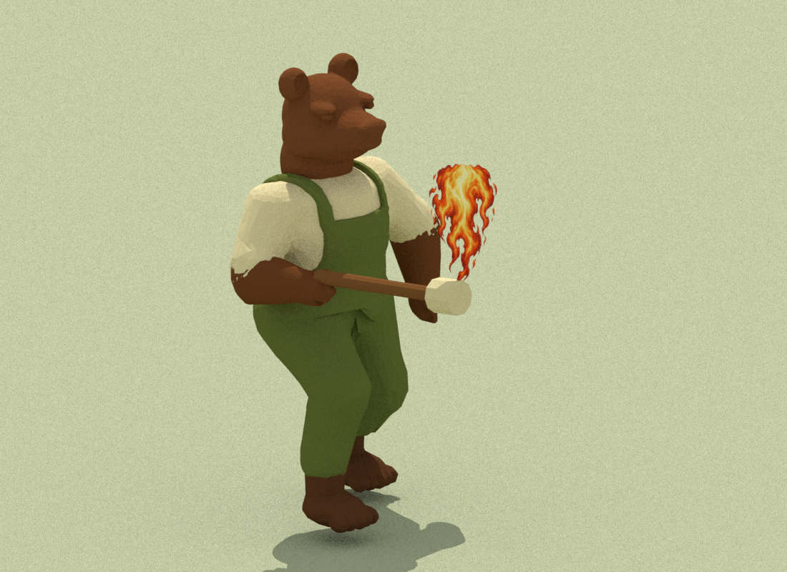
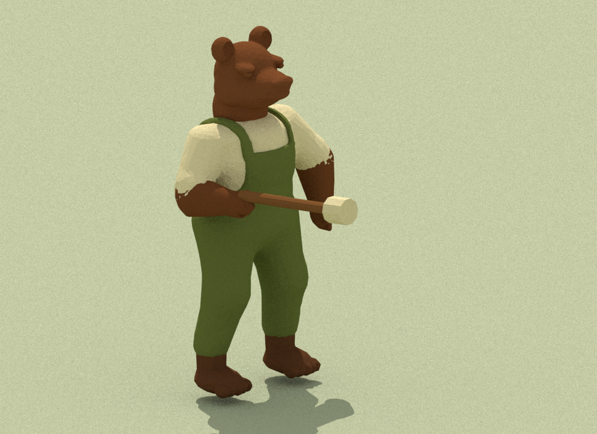
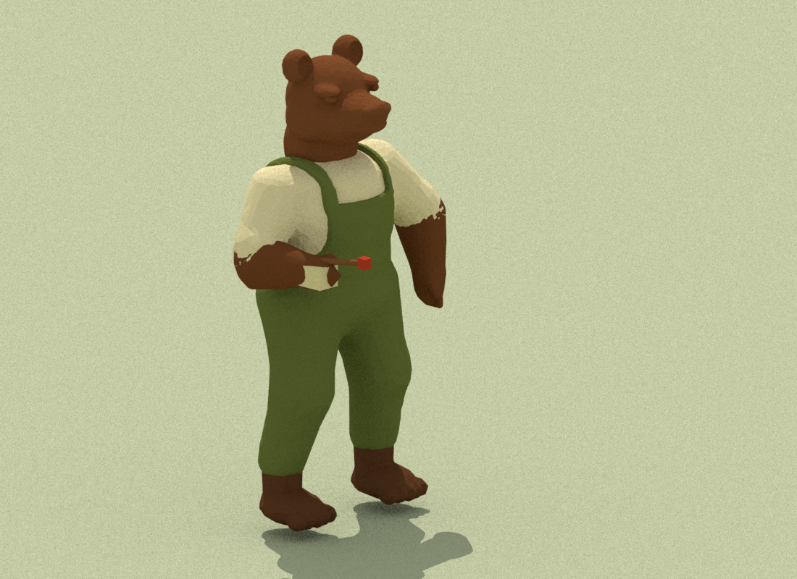

Source-mesh CPU proofs. Native dimensions and original assets retained. Row grade is lowered to expose basement courses. Bear uses source base colors; its multi-view paint shader is omitted. Live GPU acceptance remains pending.







